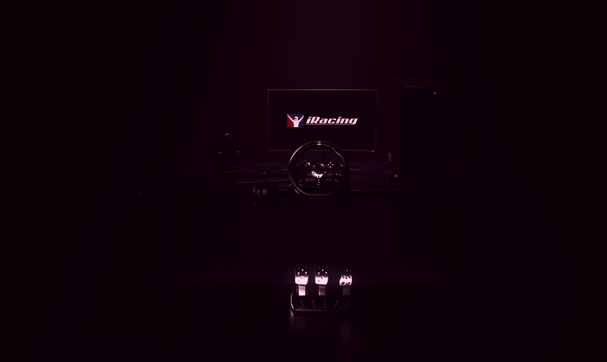
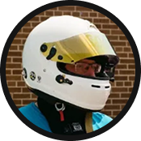
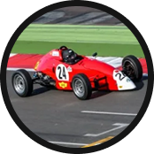

Contexto
Es diciembre 2021, estás en tu habitación encerrado por la pandemia y lees en tu celu que un tal Verstappen destronó al 7 veces campeón mundial. Dicen que fue una carrera muy reñida.
Te agarra curiosidad. Te ponés a maratonear Drive to Survive y te lo acabás en una semana. "Tiene que haber un juego que simule carreras serias" pensás.
Prendés tu PC e investigás. Desempolvás ese viejo volante que usaste para jugar Need for Speed. Te inunda la nostalgia... y te suscribís a iRacing.

¿Por qué el rediseño?
No lo digo yo, lo dicen los usuarios.
Zack Ruddle
“I remember being so confused when first playing…”

Val DiPietro
“Demasiados datos innecesarios par el usuario promedio.”
Andres Navarro
“Para un usuario nuevo el hecho de mostrarle toda la lista de carreras puede ser muy complejo…”

Carlos Tovar
“No es intuitivo y muy lento.”
Plataforma actual
iRacing comprende la plataforma donde se buscan carreras y el simulador donde se corre.
Rediseñé la plataforma
Lista de carreras
Registro a la carrera
Detalles de la carrera
Calendario
Detalles de autos y pistas
Carrito de compras
Objetivos

Negocio
- Mantener y aumentar la cantidad de usuarios en la comunidad.
- Aumentar la cantidad de compras en la plataforma

Usuario
- Encontrar y entrar a una carrera online que pueda participar según su nivel, licencia y contenido de manera simple.
- Realizar compras en la plataforma de manera fácil e intuitiva.
La falta de un flujo constante de usuarios degrada la disponibilidad de carreras competitivas y eleva el riesgo de frustración y churn rate.
Pocos usuarios en esta carrera
Se van y cierran el juego
Cada vez hay menos usuarios que compiten entre ellos